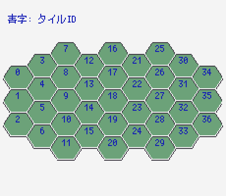
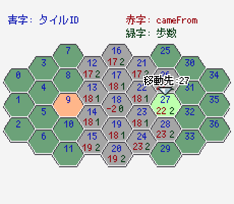
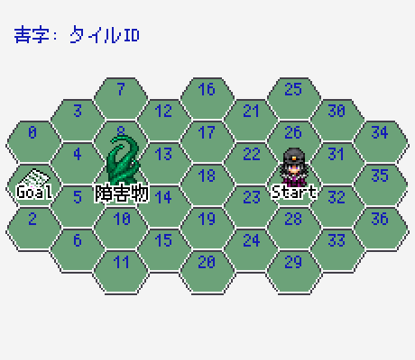
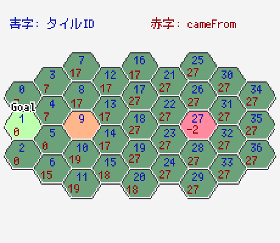

またヘックスマップ使いたくなった時に、絶対忘れてそうなので。俺用メモだよ。
一部ヘックスマップ関係ない物もあります。
サンプルコードは読みやすさ優先で書いているので、ツクール向けにオブジェクトをバラしたりとかはしていない。
また、説明用に書いたコードがほとんどなので、動作保証もない。
とりあえずコレ読んどけ！！！！！英語だけど。
Hexagonal Grids
まずは何のソフト使っても良いので、使いたいヘックスマップを画像（あるいは目で見れる形のもの）で用意する。
縦ヘックスか横ヘックスかは好みでいい。
ツクール2000の雰囲気をそのまま持ち込むなら、クオータービューで作ることになる。クオータービューなら横ヘックスの方が相性がいい気がするので、今回は横ヘックスを選んだ。
以後、横ヘックスの前提で記載する。
用意したヘックスマップの画像に対して、まずはaxial座標を設定する。
日本語だと円筒座標系とか言うんじゃないですかね。英語資料見てたので日本語名がわからない問題があります。
axial座標が何かは「はじめに」の資料参照。
上下、左上右下、右上左下の3軸を使う座標系のこと。ただし、2軸の値で残りの1軸の値が算出できるため、表記上は2軸のみ扱う。
原点はマジでどこでも良い。
※マイナス値が扱えないエンジンの場合は別。ツクール2000は問題なし。
MAPの形次第だが、左上か中央にしておくといいんじゃないだろうか。今回は左上とした。
続いて、軸を決める。
今回、左上～右下の斜め軸をq, 上下の軸をrにした。
続いて、座標を順番に振っていく。
その前に。
この時点で、axial座標系での1歩ずつの移動が出来てると楽なので、先にそっちを作る。
まず、6方向移動するときに「何をどれだけ増減させるか」を表す配列を作る。
const DIRECTIONS = [
{q: 0, r: -1},
{q: 1, r: -1},
{q: 1, r: 0},
{q: 0, r: 1},
{q: -1, r: 1},
{q: -1, r: 0},
]上から順番に時計回りで記載。
もちろん順番なんて覚えていられないので、下記定数を作っておく。
const UP = 0;
const RIGHT_UP = 1;
const RIGHT_DOWN = 2;
const DOWN = 3;
const LEFT_DOWN = 4;
const LEFT_UP = 5;後は簡単。
移動したい方向のDIRECTIONを、今の座標に足せば1歩動ける。
例えば右上に1歩歩きたいならこんな感じ。
const current = {q: 1, r: -3}; // 今の座標
current.q += DIRECTIONS[RIGHT_UP].q;
current.r += DIRECTIONS[RIGHT_UP].r;ぶっちゃけヘックスっぽいのは6方向になっているだけで。普通の格子マップでも同様に4方向（斜め移動も1歩にするなら8方向）定義して使うことになると思う。
手で1個ずつ振っても全然良いんだけど、なんか適当にforループを回しつつ、1歩ずつの移動を元にやると簡単にできる。
簡単にできるのだが、座標を振るコードは使ってすぐに捨ててしまったので残っていない……。
確か……
今回は、縦最大5横最大9マスなので、なんかこんな感じのコードで振った覚えがある。
const column = {q: 0, r: 0}; // 左上の方の最初の座標
for(let x = 0; x < 9; x++) {
const cell = column.copy();
for (let y = 0; y < 5; y++) {
// まずは縦に振る
cell.q += DIRECTIONS[DOWN].q;
cell.r += DIRECTIONS[DOWN].r;
// 表示用の変数に追加
}
// 1列終わったら、次の列の一番上に移動させる
cell = column.copy();
// 実際の移動先は、奇数or偶数で、右上と右下を切り替える
cell.q += DIRECTIONS[RIGHT_UP].q;
cell.r += DIRECTIONS[RIGHT_UP].r;
}JavaScriptの世界で扱うのであれば、そのまま、各タイルを座標オブジェクト{q: Integer, r: Integer}で管理すればいいのだが
生憎、RPGツクールにオブジェクトと言う概念は無い。
1タイル1変数（1整数）で表せるのが理想となる。
そこで、各タイルにIDを振って、IDとaxial座標を相互に変換できるようにする。
具体的には、二次元配列でマッピング配列を作り
tileIdMap[q][r]と書くことで、タイルIDが取得できればいい。
ただし、axial座標は平気でマイナスに入る。当然、配列のインデックスにマイナスなんて入れようものなら死ぬ。
そこで、qとrのMINを取得（あるいは事前に定数に定義）しておき、下記関数で取得できるようにする。
const getTileId = (q, r) => {
const qOffset = q - MIN_Q;
const rOffset = r - MIN_R;
return tileIdMap[qOffset][rOffset];
}tileIdMapの中身は、MAPの形次第なので、頑張って自分で書いて。
1回書けばいいだけなので、手作業で粛々とやった。
範囲外の場所には-1を設定しておく。
これにより、getTileIdでマイナスが帰ってきたら「マップ範囲外なんだな」とわかるようになる。
タイルIDから座標を取りたいこともある。
ということで、タイルIDごとの座標リストも作る。
これはもうシンプルに、tiles[id]で取れればそれでいい。
const tiles = [
{q: 0, r: 0},
{q: 0, r: 1},
{q: 0, r: 2},
...
]座標とタイルIDは、コード上だけではなく、図として見れる状態にしておくと開発中とても助かるというかデバッグ中常に見ることになるので、必ず用意しておこう。
今回はプロトタイプで見れる機能を用意した。
上でも書いたが、getTileIdを呼んで、範囲外だったりマイナスだったりが帰ってきたら外。有効な値が帰ってきたら内側。
配列の範囲外に到達すると壊れる可能性があるので、必要なら一周多めに定義しておくといい。
ここで言う「移動可能」は、移動力を考慮しない。
MAP全体で「ここにユニットが立っていていいかどうか」を判定するものである。
「MAP内だが障害物があって侵入できない」みたいなマスを考慮した判定ということになる。
もちろん各種ユニットも障害物である。
「MAP範囲内チェックで内側かつ、誰も居ないタイルならOK」
という判定となった。
ここまでくると、カーソル移動が作れるようになる。
横ヘックスなら、上下移動はめちゃくちゃ楽。何も考えずに下記でいい。
next.q = current.q += DIRECTIONS[UP]; // 下移動ならDOWN
next.r = current.r += DIRECTIONS[UP];
if (!isWalkable(next.q, next.r)) {
// 移動不可なら元に戻す
next = current;
}画面端でループさせるのであれば、画面端の座標をそれぞれ定義しておいて、その座標に到達したら、反対側の座標にワープするように組めばいい。
const topList = [{q: 1, r: 2}, ...];
const bottomList = [{q: 1, r: 5}, ...];
// ... 略
let index = topList.findIndex(current);
if (index > -1) {
// 画面上端からさらに上を押された場合、対応する下端タイルに移動
next = bottomList[index];
} else {
next.q = current.q += DIRECTIONS[UP]; // 下移動ならDOWN
next.r = current.r += DIRECTIONS[UP];
}
// 移動不可チェックなどなど変数値見てても楽しくないので、早めに描画は実装しよう。
カーソル移動ができてきたあたりで実装しておくと、テストもしやすくてよい。
axial座標をもとに下記でタイルの座標が出せる。
function getX(q, r) {
return q * HEX_WIDTH + HEX_LEFT;
}rは計算に使わないが、引数として受け取るようにしておくと使うときに混乱しなくって良い。
HEX_WIDTHはマスの横幅ではなく、少し小さな値になる。斜めだからね。
マスのサイズに合わせて適切な大きさにしておく。今回は24だった。（マスの大きさから計算する方法もあるがこの程度なら雑に決め打ちで入れて微修正でもいいんじゃないかな）
HEX_LEFTは左側の余白。
function getY(q, r) {
return r * HEX_HEIGHT
+ q * HEX_HEIGHT / 2
+ HEX_TOP;
}HEX_HEIGHTはマスの縦幅。
rが1増えると縦に1マス増えるので、rはそのままHEX_HEIGHTをかける。
一方qは、qが1増えるごとに半分下に下がるので、HEX_HEIGHTの2分の1をかけることになる。
HEX_TOPは上の余白。
後はカーソル用にY値を調整してやればよい。
キャラの描画も基本的に同じ。
左右移動だが、上下と同じようにはいかない。
何故なら、横ヘックスの場合、右キーを押して移動する先は、右上 or 左上、と、2パターン存在するからだ。
どのように制御するかはゲーム設計による。一般的なのは下記3パターンじゃないかな。
* 横キーは原則「左上or右下」の移動、逆に移動したいなら上キーと組み合わせてね。
* 横キーは原則「左上or右下」の移動だが、特定キーと同時押しで反転する。
* 奇数列なら斜め上、偶数列なら斜め下の移動とする
いずれもメリットデメリットがある。手触りが好みなものを選ぼう。
今回は「奇数偶数で斜め上斜め下を切り替える」方針とした。
最上段、最下段で考えることが増えて少しクソコード化してしまった。次回以降もう少しスマートに書こう。
もちろん、画面端でループさせるなら、moveUp, moveDown同様のループ処理が必要になるぞ！
指定座標の周囲6マスを取得する。
ただし、移動不可のマスは対象外とする。
ZOCの判定に使うのはもちろん、この後のBFSで滅茶苦茶使うのでマストで実装が必要。
実装はだいぶシンプル。6回回して、1方向の座標を取得し、移動可能かチェックするだけ。
const getNeighbors = (q, r) => {
const list = [];
// 6方向なので6回まわす。
for (let i = 0; i < 6; i++) {
let nextQ = q;
let nextR = r;
nextQ += DIRECTIONS_Q[i];
nextR += DIRECTIONS_R[i];
// 移動可能ならセット
if (isWalkable(nextQ, nextR)) {
list.push(getTileId(nextQ, nextR));
}
}
return list;
};メインコンテンツ！！一番楽しいところ。
だが、ここまで来るとヘックスマップっぽい箇所は皆無となる。格子マップでも全く同じ方法で作れる。
ヘックスじゃなくて普通の格子マップSRPGとか作りたいならここだけでも見るといい。
主に下記2点で使う。
2はCPUの行動ロジックの肝となる。いくつか調整項目もあり、最後まで弄る事が多い。
一方1は答えはほぼ決まっている。また、2の計算で1が必要になることもある。
よって、1. 移動範囲の算出から先に実装するのをオススメする。

探索待ちマスを管理するqueueと、どのマスから到達したかを保存するcameFrom[]という配列を主に使う。
※移動範囲だけがわかればよいのであれば、cameFrom[]は必要ないのだが、移動範囲算出後、キャラクターを歩かせる必要がある。その際の経路として使うためcameFrom[]は移動範囲の算出でも必要となる。
また、移動範囲の算出なので、開始マスから何歩でたどり着くかを保存するwalkDists[]という配列も用意する。
※経路探索だけでよいなら、walkDists[]は必要ない。
まず、もろもろの変数の初期化を行ったのち、queueに探索開始のマス（キャラが今立っているマス）をpush。
このとき、cameFrom[]は大きなマイナス値で初期化しておく。今回は-999とした。
続いて、開始マスは「どこからも到達しないが、すでに探索済み」であることを表すため、cameFrom[start]に-2をセットしておく。
また、walkDists[]は-1で初期化し、walkDists[start]には0をセットしておく。
続いて、queueが空になるか、何らかの終了条件を満たすまでwhileループを行う。
※移動範囲の算出の場合、終了条件は無いが、経路探索の場合はゴールマスにたどり着いたらそこで終了となる。
まず、queueから1つ、探索起点マスcurrentをpop。
currentの値をチェックする。
今回は移動範囲の算出なので、walkDists[current]が移動力(今回は全員2)以上なら、whileループをcontinueしてスキップする。（以上なので、2でもスキップ）
また、いわゆるZOCの影響があるのであれば、ZOCだった場合もスキップする。
※ZOCは事前にZOC発生オブジェクトの隣接マスをgetNeighborsで取得した後、zoc[tileId]という形式の配列にzocならフラグを建てたりキャラIDを登録したりして管理するとよい。
探索対象だったら、続いて、getNeighbors(current)で、探索起点マスの周囲6マスを取得。forループなどで、隣接マスnextを1件ずつチェック。
nextがまだ到達したことのないマス(＝cameFrom[next]が初期値-999)だったら、cameFrom[next]にcurrentを代入。
walkDists[next]には、walkDists[current]に1を足した値を代入。
最後に、queueに探索起点マスとして追加。
whileループここまで。
queueが空になったら、必要なマスはすべてマークが終わったことになるので、最後に結果のcameFromをまとめて返す。
利用する側では、cameFrom[tileId]に有効なタイルID(0以上の値)が入っていれば、移動可能マスとして扱えばよい。

さて、移動可能マスのリストを取得することができた。
何らかの手段でプレイヤーにそれを伝え、プレイヤーが、移動可能マスのリストから移動先を選択したとする。
さて、その移動先へはどのような経路で到達するのだろうか？
移動アニメーションを一切行わないのであれば、経路復元は不要だが、おおよそ普通のゲームであれば、1マスずつ歩いて移動するアニメーションを見せるだろう。
ということで、cameFromを使って経路を復元する必要がある。
移動先のマスIDはgoalという変数に入っているとして、path[]という配列に経路を保存するとしよう。
まず、cameFrom[goal]をとりあえずcurrentにでも保存。pathにpushなりなんなりで末尾に追加する。
続いて、cameFrom[current]をcurrentに代入（1個たどる）、また、pathの末尾に追加する。
あとはcurrentが-2(開始マスのマーク)になるまで続ける。
さてこれでpathに経路が入った、と思いきや、pathはゴールからの道順になっている。
普通の利用用途であれば、逆順になっていると思うので、path.reverse()なり何らかの方法で、逆順に読みだす必要がある。
続いて、CPUの経路探索になる。
早速説明、の前に、実装時に意識しておくべき重要な事柄があるため、先に説明する
CPUの経路探索だが、おそらく最終的には「最短ターン数での経路」が欲しくなる。（今回の説明も、最終的にはそこにたどり着く）
最短ターン数を出すためには、敵キャラの移動力をもとに、各ターン、歩行可能範囲を算出する必要がある。
そう、経路探索の中で、1. 移動範囲の算出のBFSを回す必要があるのだ。
今時の……いや、普通のプログラミング言語であれば、あまり深く意識する必要は無いのだが、RPGツクール2000においてスコープという概念は無い。2k向けの変換エンジンであるjs-to-tkcodeも、原則変数はすべてグローバルという扱いになっている。
つまり、1. 移動距離の算出用の変数名（変数番号）と、2. CPUの経路探索で使う変数名（変数番号）に重複がある場合、ものによってはバグになる、ということである。
ということで、安全を期すのであれば、すべての変数名（変数番号）は独立させておくこと。
また、whileループのcontinueやbreakの実現のためにラベルとGOTO命令を利用するのであれば、そのラベルの番号も独立させておく必要がある。
後々分離させようと思うとだいぶ面倒だし、高確率で漏れが発生してバグになるので、最初から意識しておく方がいい。
最初から意識なんてできなかったためバグがいっぱい出ました。悲しいね。
まずは1.移動範囲の算出とほぼ同じロジックを使って、最短歩数での経路を取得しよう。
まず、経路探索においては、歩数の概念は不要なため、walkDists[]の配列は不要となる。
結果を入れる配列はcameFrom[]のみでよい。
queueの初期化等は移動範囲の算出と同等。
また、今回は目標のマスにたどり着いたら探索終了となるため、目標と表すgoalも用意する。マップID、q, r それぞれあると良い。
探索自体は基本的なBFSと同じである。
queueから1つpopし、currentに入れる。currentが探索終了条件（≒goalと同じ）だったらループを抜けて探索を追える
hasRoute等の名前で「ゴールに到達した」フラグを立てておくと、後々の不具合チェックに役立つので立てておこう。currentの周囲6マスneighbors[]を取得neighborsを順番にチェック。未到達ならcameFrom[neighbor]にcurrentを設定し、queueにpushする。queueが空じゃないなら、1に戻る。ざっくりこんな感じ。
到達・未到達の判定をどうする？などは、1. 移動範囲の算出のBFSを参照してほしい。
さて、経路探索はCPUの移動ロジックに使う。
となれば、経路は予測可能じゃない方が望ましい。
もちろん、最短経路が1つしかないのであれば、常にそれが選ばれるべきだが
最短経路が複数パターンあるのであれば、そのいずれかがランダムに選ばれるべきである。
経路のランダム性をどうやって実現するか？
それは、上記の探索ループの4番、neighbors[]を順番にチェックする箇所にて、そのチェック順をランダムにすればいい。
ただし、RPGツクールにおいて、配列のランダムソートは果てしなくめんどくさい。やろうと思えばできるがやりたくない。
予測不可能であればなんでも良いので、ここでは、neighbors[]のチェック順を昇順か降順かをランダムに決めることにした。
つまりこうである。
（JavaScriptのサンプルコードのため、reverseを利用しているが、実際には配列の添え字を大きい方から見るようなコードで実装する必要がある）
const isDesc = Math.random() > 0.5;
const neighbors = getNeighbors(currentQ, currentR);
if (isDesc) {
neighbors.reverse();
}
for (const nextId of neighbors) {
// 隣接マスの到達チェックなどなど
}これだけでもランダム性は担保できる。
無理に配列のランダムソートを噛まして計算量を増やすくらいならこれで充分。
経路の復元も、基本的に移動範囲の算出と変わらない。
ただし、hasRoute（ゴール到達フラグ）がfalseの場合、何らかの理由でゴールに到達できなかったという事になる。
今回のゲームであれば、ゴールへの経路が遮断されることは絶対にない。よって、経路復元直前にhasRouteをチェック。falseであればエラーメッセージを出す等しておく。
※もちろん、ユニット数が多いゲームになれば、ゴールマスへの経路が敵ユニットに完全にふさがれており、到達できない、と言ったケースも有り得る。
その場合にどういう経路を取らせるかは、また考える必要がある。
経路復元自体は移動範囲の算出と同じで良い。
ただし、経路の全てが必要になるわけではない。今回であれば、敵ユニットの移動力は2なので、スタートから2つ取れればそれでよいこととなる。

さて、ここまで組んで動かしてみると、いささか敵が阿呆になってしまう。
というのも、本ゲームにはZOCがある。
最短歩数だけで経路を決めてしまうと、ZOCに突っ込んでしまい、「歩数的には最短だが、ターン数は大幅に遅くなってしまう」経路を選んでしまうケースがあるのだ。
もちろん、阿呆な敵という演出であればこのままでも良いが、基本的には敵はある程度賢いはずなので、最短歩数ではなく最短ターン数での経路探索を行う必要がある。
では、最短ターン数をどう実現するか。
最短歩数時の経路探索ループは下記であった。
queueから1つpopし、currentに入れる。currentが探索終了条件（≒goalと同じ）だったらループを抜けて探索を追えるcurrentの周囲6マスneighbors[]を取得neighborsを順番にチェック。未到達ならcameFrom[neighbor]にcurrentを設定し、queueにpushする。queueが空じゃないなら、1に戻る。ここの3～4で取得・チェック対象とするneighbors[]を、隣接6マスではなく、currentから1ターンで到達できるタイル全て、とすればよい。
具体的には、こう。
※移動力2の想定
queueから1つpopし、currentに入れる。currentが探索終了条件（≒goalと同じ）だったらループを抜けて探索を追えるcalcWalkRange(current)にて、currentからの移動可能範囲を計算する。
walkCameFrom[]およびwalkDists[]を参照することとする。walkCameFrom[]を順番にチェック（MAP全体のタイル数分回す）
nextIdとするwalkCameFrom[nextId]が初期値-999でなくwalkDists[nextId]が1～2の範囲（移動力の範囲内）かつcameFrom[neighbor]にcurrentを設定し、queueにpushする。queueが空じゃないなら、1に戻る。もちろんここでも、4番の順番にチェックする箇所で、乱数による昇順・降順の切り替えは行うこと。
ここまでくればわかるかもしれないが、3～4の探索範囲と探索時の優先順位を操作することによって、ある程度CPUの動きを操作することができる。
今回は、最終的に「同一ターン数ならより多く歩ける方」を選ぶ、というアルゴリズムとした。
これにより、ZOCをなるべく避けるような動きになっているはずである。
コードとしては、4番の探索を下記に変えている。
まずは下記ループを回し、移動力2の経路のみ先に探索する。
walkCameFrom[nextId]が初期値-999でなくwalkDists[nextId]が2かつcameFrom[neighbor]にcurrentを設定し、queueにpushする。続いて、同様に回して移動力1の範囲を探索する。
walkCameFrom[nextId]が初期値-999でなくwalkDists[nextId]が1かつcameFrom[neighbor]にcurrentを設定し、queueにpushする。
さて、最短ターン数の探索はこれで無事出来たのだが、このアルゴリズムで探索を回すと、これまで通りcameFrom[]を辿って経路を復元しようとすると、飛び石になってしまう。
なぜなら、cameFrom[]には、1ターンで到達出来た場所のマスが入るからである。
よって、ここから実際に1ターンで移動する経路を割り出すためには、もう1回経路探索を行う必要がある。もちろん、この探索ではZOCを意識しなくてはいけない。（うっかりZOCを通るルートを選ぶと意図したルートにならない）
色々とやり方があるが、ここでは「一度移動範囲の算出を行い、その結果をwalkCameFrom[goal]から辿っていく」方式とした。
ヘックスマップとはほぼ全く関係ないが、描画関連のロジックについて一部記載しておく。
ピクチャの移動で1ドットずつずらすようなループ動作を作って、どっか別のイベントとして置いておいて「並列実行」設定にしておくと出来る。
例によって例のごとくImageMagickを使っている。
自作のmagic-potで使うから以前に、普通にゲーム制作で便利過ぎるので入れることをオススメする。
今回、320x240サイズのキャンバスの中央に画像を配置したものを各コマで作成し、それを結合したものを利用している。
歩行グラを元に、素材を作るのであれば、まず、1キャラ分の素材を切り出してから
1コマごと切り出したファイルを、tmpディレクトリ以下に作成して
magick .\material\g-full.png -crop 24x32 +repage +adjoin tmp/g_%03d.png 切り出した各画像を320x240サイズの緑色の画像の中央に配置して
magick mogrify -path tmp/padded -background "#00FF00" -gravity center -extent 320x240 tmp/g_*.png横3, 縦4で並べ直す。
magick montage tmp/padded/g_*.png -tile 3x4 -geometry +0+0 -background none g_full.pngと、今回使ったようなものが出来る。
当然だが、歩くとき、キャラクターは歩く方向を向く。
ツクールの歩行グラは上下左右の4方向ある。
一方、ヘックスマップは6方向への移動である。
よって、移動方向が上下左右のどちらに向いているか判定する必要がある。
今回は1歩ずつの移動しかないため、移動先のタイルを見て「横方向の移動だったら～」みたいに分岐するのも悪くは無いが、例えば「飛行ユニットはタイルを横断して一気に動く」みたいなことをしたくなると大変面倒である。
よって、単純に「移動先と移動元の座標から、縦方向と横方向の移動量を取得。移動量を比較して向いている向きを判断する」という方針にした。
具体的には下記。
abs()なんて便利な物は無いので、自前で実装する特定の座標から特定の座標に移動する場合、移動後の座標から移動前の座標を引いて、移動量を求め、それを移動に使うフレーム数で割れば、1フレームの移動量が算出できる。
XもYも同様なので、以後すべてX座標の話とするが……。
例えば、x:30からx:70に30フレームかけて移動する場合。
まずは移動量を求める。
75 - 30 = 45。
30フレームかけて移動するため
45 / 30 = 1.5
1フレームに1.5ピクセル、ピクチャを移動させればよいということだ。
これで終われば簡単なのだが、ツクールでは小数点を扱えないため、このやり方は破綻する。
移動量の商と余りを別々に考慮する必要がある。
移動フレームごと、毎回下記計算にて、移動量を算出する。
restSumXとする。115restSumXに余りを足す。今回は15restSumXが移動フレーム数30以上になったら、移動量に1を足し、restSumXから移動フレーム数を引くとすることにより、良い感じに余り分の移動量も各フレームに割り振って移動ができる。
ツクールのピクチャはピクチャ番号によって重なりが決まる。
各ユニットの位置に応じて、適切にピクチャ番号を入れ替えないと、前後関係が狂ってしまう。
マスの大きさを大きくすることによって、ユニットが絶対に重ならないようにするという逃げは可能。
今回は選ばなかった。
今回選んだのはこっち。
描画前に、各ユニットの重なり順（レイヤー番号）をY座標を使って計算。
レイヤー番号に変更があれば、「ピクチャの表示」で各ユニットのピクチャ番号を変更する。
（変更管理が必要なため、layers[]とoldLayers[]の二つの配列で管理する）
簡単そうに書いているが管理することは多く、面倒臭い。
ただでさえ面倒くさいのだが、実は、この描画方法では滑らかな描画が出来ない。
「ピクチャの表示」命令をすでに描画中のピクチャ番号に対して再度実行すると、ピクチャのちらつきが発生してしまう。
じゃあどうするのか？
ダブルバッファの自前実装である……。
ダブルバッファというのは、ゲームエンジンでよく使われる描画方式。
今描画中の画面（キャンバス）とは別に、裏で「バッファ」と呼ばれるキャンバスを用意しておく。
画面の描画を一気に変更する場合、表側の画面を直接変更するのではなく、バッファ側で描画を行い、全ての描画が完了してから、バッファと表側のキャンバスを入れ替える、というもの。
この方式にすることで、中途半端な描画をプレイヤーに見せることなく、スムーズに描画を変更することができる。
もちろんツクール2000にダブルバッファは無い。いや、内部的にはありそうなんだけど、作る側がダブルバッファを意識してなんやかんやすることは難しい。
よって、完全なダブルバッファではなく、ダブルバッファ風の描画となる。
今回は3ユニットなので、3つピクチャ番号が確保されている。
今確保済みの3ピクチャ番号を「表」とし、別でもう3つ「裏」のピクチャ番号を確保する。
表と裏、どちらのピクチャを描画に使っているかを表すフラグisSwapLayerを用意。trueなら裏を描画に使っていると判断する。
初期時点では、isSwapLayerはfalseで、描画も表のピクチャ番号で行われている状態。
さて、ここでレイヤー番号に変更があり、各ユニットのピクチャ番号を変更する必要が出た。
現在isSwapLayerはfalse、表で描画している状態なので、変更後のレイヤー番号に基づくピクチャの表示は「裏」のピクチャ番号に行う。
この時点では非表示としたいので、ピクチャの表示位置は画面外の遠い場所に飛ばしておくこと。
裏のピクチャの読み込みが終わったら、isSwapLayerをトグル（今回だとtrue）し、裏のピクチャを正規の位置に表示し、表のピクチャは画面外に飛ばす。
裏から表に描画を変えるときも同様に行う。
これによって、滑らかにレイヤーを切り替えることが可能になる。
もちろん、1ユニットに2枚のピクチャが必要になるというデメリットは大きい。
今回は3ユニットなので何の問題も無くできたが、ユニット数が増える場合は別の方法も考える必要がある。